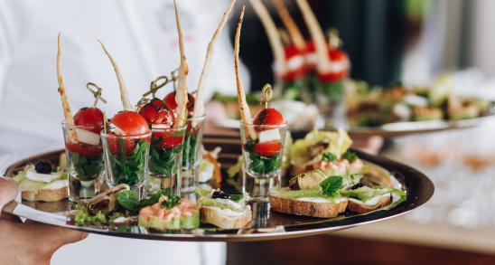

Trending Now: Must-Try Food and Drink Trends for Events
As event planners seek to create memorable experiences for their guests, they continually look for innovative ways to tantalize taste buds and ignite conversation. From inventive culinary creations to imaginative libations, the world of food and drink is constantly evolving. Here are some must-try food and drink trends that are currently making waves in the world of events:

1. Interactive Food Stations:
Gone are the days of traditional buffet lines. Interactive food stations are taking center stage, allowing
guests to customize their culinary experience. From build-your-own taco bars and gourmet grilled cheese
stations to sushi rolling workshops and liquid nitrogen ice cream bars, interactive food stations add an
element of fun and engagement to any event.
2. Global Flavors and Fusion Cuisine:
Embrace the world on a plate with global flavors and fusion cuisine. From Korean tacos and Indian-inspired
flatbreads to Thai-infused cocktails and Mediterranean mezze platters, incorporating international flavors
adds a sense of adventure and intrigue to your event menu.
3. Plant-Based and Vegan Options:
With the rise of plant-based eating, more and more event planners are incorporating vegetarian and vegan
options into their menus. From jackfruit sliders and cauliflower buffalo wings to vegan cheese boards and
dairy-free desserts, plant-based options are not only delicious but also cater to guests with dietary
restrictions or preferences.
4. Zero-Proof Cocktails and Mocktails:
The sober-curious movement has sparked a growing demand for zero-proof cocktails and mocktails. From
alcohol-free versions of classic cocktails like the mocktail mojito and virgin margarita to inventive
concoctions made with fresh juices, herbs, and botanicals, zero-proof options offer guests a sophisticated
alternative to traditional alcoholic beverages.
5. Elevated Comfort Food:
Comfort food gets a gourmet makeover with elevated twists on classic favorites. From truffle mac and cheese
and lobster grilled cheese sandwiches to foie gras-topped burgers and duck fat fries, elevated comfort food
satisfies cravings while adding a touch of luxury to any event.
6. Artisanal and Craft Everything:
Craft beer, artisanal cocktails, and small-batch spirits are all the rage at events. Whether it's a local
microbrewery serving up unique brews, a craft cocktail bar featuring house-infused spirits and homemade
syrups, or a whiskey tasting showcasing rare and limited-edition bottles, artisanal and craft offerings add
a touch of sophistication and authenticity to the beverage selection.
7. Instagrammable Desserts:
Desserts are no longer just a sweet treat – they're a visual feast for the eyes. From over-the-top
milkshakes and decadent donut walls to colorful macaron towers and intricate dessert grazing tables,
Instagrammable desserts are stealing the spotlight at events, enticing guests to snap and share photos of
these edible works of art.
8. Sustainable and Eco-Friendly Practices:
With growing awareness of environmental issues, event planners are prioritizing sustainability and
eco-friendly practices when it comes to food and drink. From sourcing locally grown and organic ingredients
to minimizing food waste and using compostable or reusable serving ware, incorporating sustainable practices
into your event not only reduces your environmental footprint but also demonstrates a commitment to
responsible stewardship.
9. DIY Food and Drink Experiences:
Get guests involved in the culinary action with DIY food and drink experiences. From DIY cocktail bars and
make-your-own pizza stations to gourmet s'mores bars and interactive dessert decorating stations, giving
guests the opportunity to customize their food and drink adds an element of creativity and personalization
to the event.
10. Health and Wellness Offerings:
As health and wellness continue to be hot topics, event planners are incorporating nutritious and mindful
options into their menus. From superfood smoothie bowls and antioxidant-rich salads to wellness shots and
herbal teas, offering health-conscious options ensures that guests can indulge guilt-free while nourishing
their bodies and minds.
In conclusion, these food and drink trends are shaping the landscape of events, offering guests a diverse array of culinary experiences that are both delicious and Instagram-worthy. Whether you're embracing global flavors, elevating comfort food, or prioritizing sustainability, incorporating these trends into your event menu is sure to impress guests and create lasting memories. Cheers to the exciting world of food and drink!